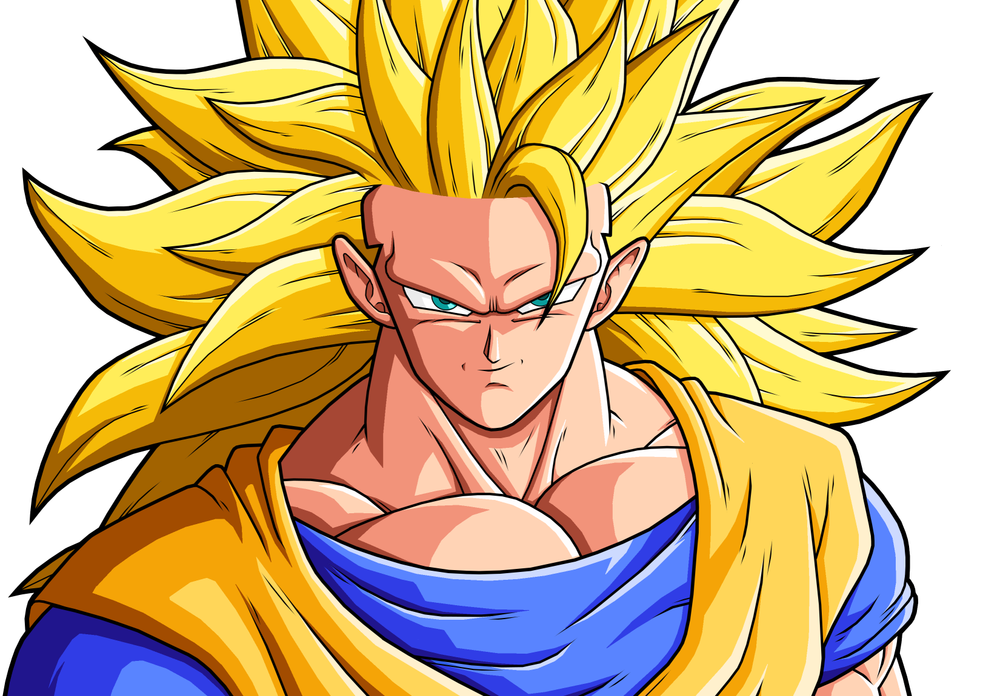
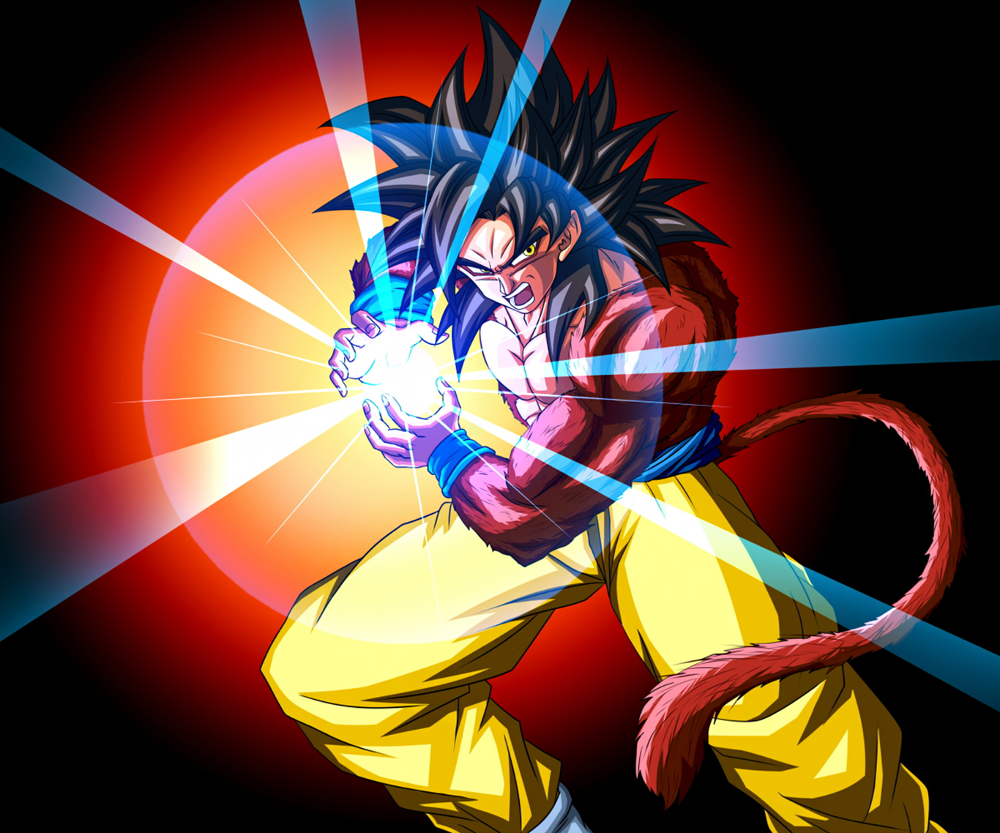

-

-

Super Saiyajin 4
Quando Goku ganha controlo sobre si, ele é capaz então de se transformar em Super Saiyajin 4. Learn more -

Super Saiyajin Deus
A Super Saiyajin Deus é a transformação utilizada por Goku assim que ele consegue aceder a Ki Divino. Learn more